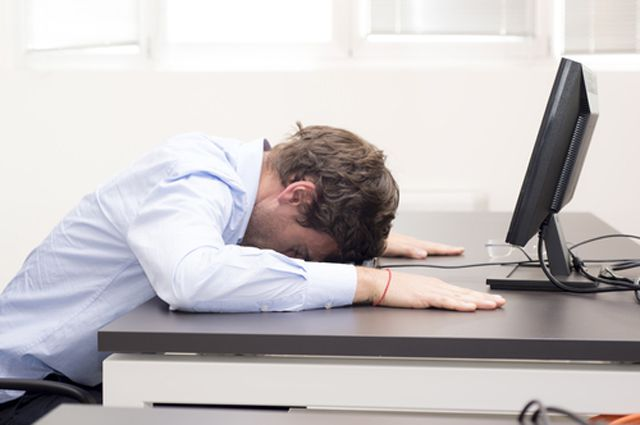

Hypodynamia is a disease of the 21st century. This is a condition
that occurs due to a sedentary lifestyle. Today, hypodynamia is considered
a social disease, along with addiction to gadgets and computer games
Example of Hypodynamia
According to statistics, 60% of adults and 75% of young people suffer from hypodynamics.
Modern children sit still for a long time - classes at school or kindergarten, extra classes,
rest at home with a tablet in hand and low levels of exercise lead to health problems at an early age.
According to statistics, only 10% of children and 8% of adults go in for sports regularly. 43% are overweight at the age of 40.
Signs of Hypodynamia
- Lethargy, Drowsiness;
- Bad Mood, Irritability;
- General Malaise, Fatigue;
- Decreased Appetite;
- Sleep Disturbances, Reduced Efficiency.
Prevention of Hypodynamia
Since hypodynamia is not a disease, it does not require special treatment.
You can get rid of its symptoms by changing your lifestyle.
Protection
- Morning Exercise
- Walking Outside
- Athletics
Having good health and a beautiful figure may require only a little perseverance,
will and desire to change your life. Each of us has the conditions for all this, we just need to use it!